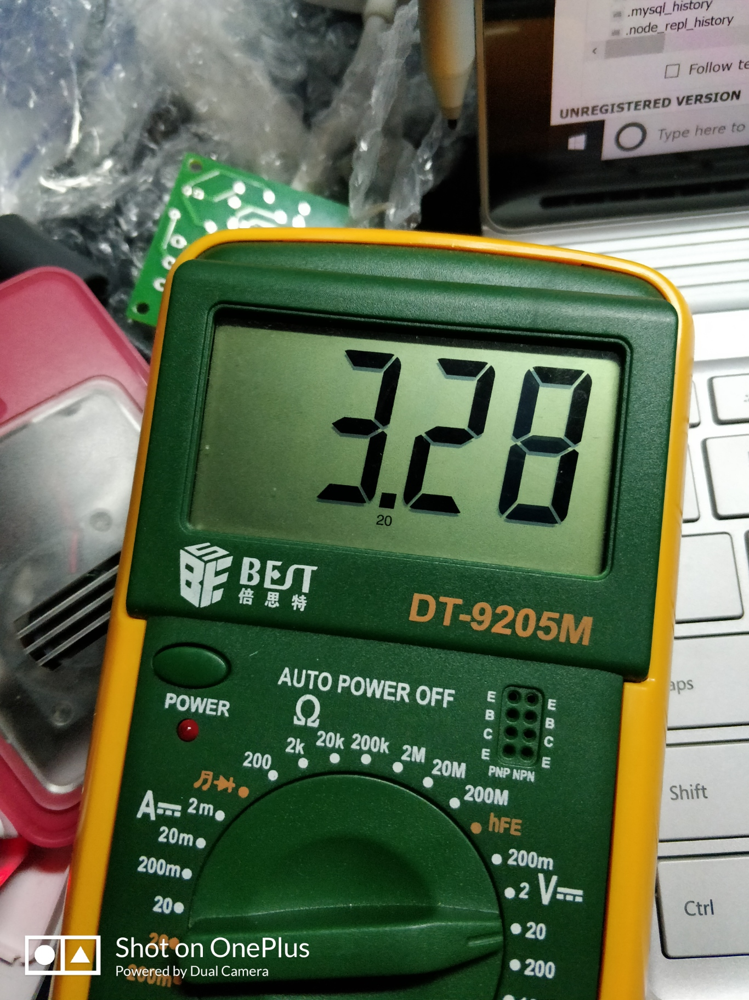
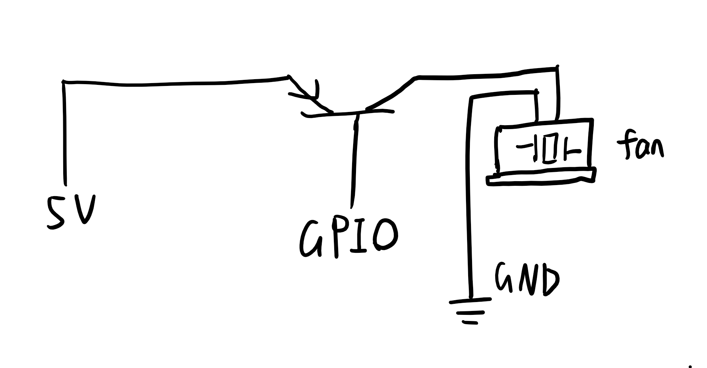
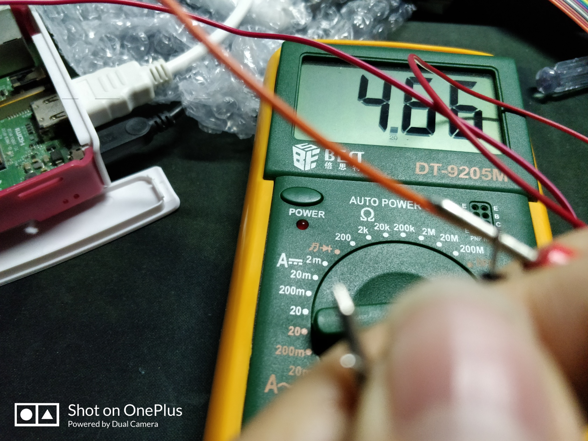

前言
上回说到，对于arm64的系统来说，目前并没有一个库可以支持对GPIO的调用。那么接下来摆在我面前的就三条路：- 修改setup.c，让cpuinfo中包含相应的Hardware信息，随后重新编译内核
- 修改wiringPi源码
- 放弃使用库
可行的方法
上面三个选项中，1和2显然是极其不现实的，因此我决定采用第三条路。在之前那个issue中，我看到了这样一种用法：
At least as root GPIO works in bash on low level:
echo “23” > /sys/class/gpio/export
echo “out” > /sys/class/gpio/gpio23/direction
echo “1” > /sys/class/gpio/gpio23/value
…
and can be verified by LED.
根据网上的资料，/sys/class/gpio是linux通用的GPIO控制方法，看样子是好好地贯彻了Unix“一切皆文件”的思想。那么接下来简单地测试一下：
1 | # root @ rasp in /sys/class/gpio [19:07:22] |
可以看到系统自动生成了相关的GPIO目录，进入之后可以看到相关的文件
1 | # root @ rasp in /sys/class/gpio/gpio18 [19:10:36] |
相关的命名还是非常简单直观的，向direction中写入信息控制GPIO的输入输出方向，value则控制的是输出值，那么就拿我们先前选定的18号针脚来测试一下吧:
1 | # root @ rasp in /sys/class/gpio/gpio18 [19:11:31] |
接下来用万用表检测

3.28v，确实是1，取消输出不知道为什么向value写入0并不管用，因此只有直接向unexport写入端口号:
1 | # root @ rasp in /sys/class/gpio [19:29:18] |
可以看到相关的目录自动被移除了，电压也变成了0
代码编写
实际上逻辑并不复杂，但是要考虑到程序退出之后风扇依旧会旋转，因此要做好信号的捕捉：
1 |
|
请原谅我极其不优雅不简洁的实现方式和混乱的代码风格，毕竟有太久没碰过了。但是我要说的还是那句话：
又不是不能用
再次碰壁
我按照上面的方法接入了风扇，随后echo……嗯，看起来一切正常，也没有报错什么的，除了风扇*纹丝不动以外。
纹丝不动……
纹丝不动……
不动……
动……
……
Why？为什么会变成这样呢……第一次有了能调用GPIO的方法。有了能控制风扇开关的代码。两件快乐事情重合在一起。而这两份快乐，又给我带来更多的快乐。得到的，本该是像梦境一般幸福的时间……但是，为什么，会变成这样呢……
原因分析及解决方法
咳咳，请不要打我。其实仔细想想原因不难想到，GPIO是一种数字电路，而数字电路的电阻通常大得惊人，电流则是mA级别的，所能做的也仅仅就是点亮LED而已，想要让它驱动风扇实在是强人所难。因此不可避免地，我们就需要对电流进行放大。目前手头只有A42 A331的三极管，β值大约在320左右，勉强可以使用，就就地使用了。电路图大致如下（手残请忽略）：

基极连接GPIO并调至高电平之后，测得发射极和和集电极之间电压为4.66v，带动风扇应该没问题

接入风扇之后，风扇正常工作，至此，温控风扇连接完毕。
自启动
写了一个程序，当然要做成自启动服务了，得益于systemd，编写系统服务变得非常简单，在/etc/systemd/system目录下新建一个autofan.service文件，内容如下：
1 | [Unit] |
随后运行systemctl daemon-reload重新加载服务，systemctl start autofan.service启动服务即可。
后文
虽然成功地实现了风扇的温度控制，但是文中的操控GPIO的方法实在太不优雅了，仅仅是个临时之策，无法大规模运用。当然，也不是没有将之封装成一个库的想法，但时目前并没有太多的需要以及动力，就先这样吧。又不是不能用
不要重复造轮子
——忘了谁说的了
では、諸君は。